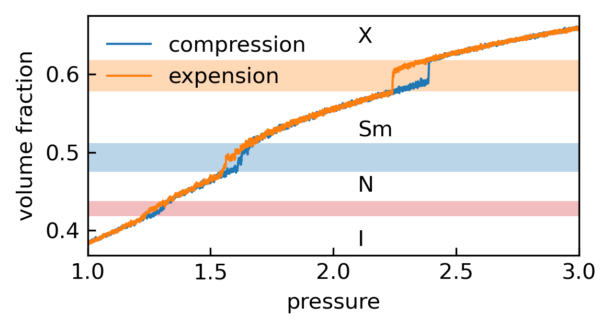

by Yawei Liu @ Sydney, Australia 2021/05/23
In this week, I ran several simulations as follows: first, a cubic box consisting of \(1080\) rods (\(L/D=5\)) was equilibrated into an isotropic liquid phase at a pressure \(p=1.0\); then, the system was slowly compressed by increasing the pressure to \(p=3.0\) in \(5\times 10^7\) steps; after reaching the final crystal phase at \(p=3.0\), the box was expended back to the low pressure at the same rate. During the simulations, some info of the system were recorded into files named result_thermo.dat, as shown below:
step time temp pxx pyy pzz lx ly lz Nr
0 0 1.010264 0.902227 1.202412 0.396579 23.548369 22.659428 23.548369 1080
1000 5 0.971048 0.796330 1.109226 1.026151 23.547066 22.652173 23.554622 1080
2000 10 1.006397 1.114031 0.826077 0.874079 23.550692 22.640817 23.540041 1080
... ... ... ... ... ... ... ... ... ... ...
49998000 249990 0.968171 2.711777 3.104047 3.133346 18.995607 19.365199 19.823234 1080
49999000 249995 1.020668 2.770042 2.974512 2.774922 18.999537 19.366164 19.826702 1080
50000000 250000 0.979795 2.729397 2.316430 3.073195 18.991180 19.372467 19.842262 1080I renamed the two result_thermo.dat files in the compression and expansion simulations as result_thermo_compression.dat and result_thermo_expansion.dat, respectively. This is a Python script to visualize the relation between the pressure and the volume fraction based on the data produced by the simulations:
Pmin = 1.0
Pmax = 3.0
Prate = (Pmax-Pmin)/5e7
fig = plt.figure(figsize=(4,2.2), dpi=300);
ax = fig.add_subplot(111);
data = pd.read_csv(directory+"/result_thermo_compression.log",sep='\s+')
x = data['step']; x -=x[0]
x = Pmin+x*Prate
y = data['Nr']*body.volume/data['lx']/data['ly']/data['lz']
ax.plot(x[::10],y[::10],'-',lw=1,label='compression');
data = pd.read_csv(directory+"/result_thermo_expension.log",sep='\s+')
x = data['step']; x -=x[0]
x = Pmax-x*Prate
y = data['Nr']*body.volume/data['lx']/data['ly']/data['lz']
ax.plot(x[::10],y[::10],'-',lw=1,label='expension');
xy = (1,0.418)
width = 2;height=0.02
block = plt.Rectangle(xy,width,height,facecolor='tab:red',alpha=0.3,edgecolor='None',zorder=0)
ax.add_artist(block)
xy = (1,0.475)
width = 2;height=0.037
block = plt.Rectangle(xy,width,height,facecolor='tab:blue',alpha=0.3,edgecolor='None',zorder=0)
ax.add_artist(block)
xy = (1,0.578)
width = 2;height=0.04
block = plt.Rectangle(xy,width,height,facecolor='tab:orange',alpha=0.3,edgecolor='None',zorder=0)
ax.add_artist(block)
ax.text(2.1,0.38, 'I', fontsize=10)
ax.text(2.1,0.45, 'N', fontsize=10)
ax.text(2.1,0.52, 'Sm', fontsize=10)
ax.text(2.1,0.64, 'X', fontsize=10)
ax.set_xlabel('pressure');
ax.set_ylabel('volume fraction');
ax.set_xlim(min(x),max(x));
ax.tick_params(direction='in')
ax.legend(frameon=False)
plt.tight_layout()We can obtain the the equation of state for this system with the volume fraction plotted vs the pressure. Each hysteresis between the compression and expansion branches is a clear indication of the first order transition between Isotropic (I), Nematic (N), Smectic (Sm), and Cystal (X) phases. And the slender coloured boxes delimit the two-phase coexistence regions between these phases.

© 2021 Yawei Liu. All content licensed under the Creative Commons Attribution-NonCommercial License 4.0 International (CC BY-NC 4.0).